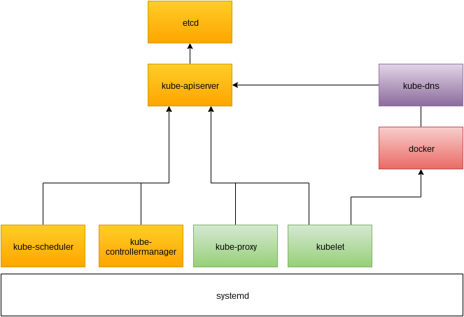
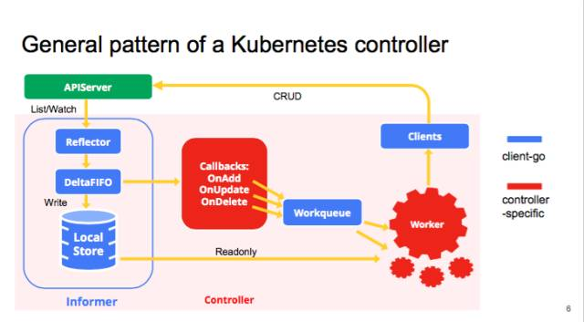
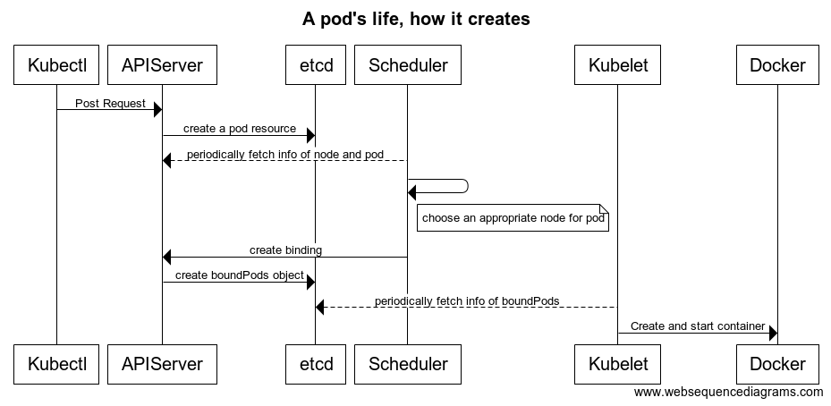
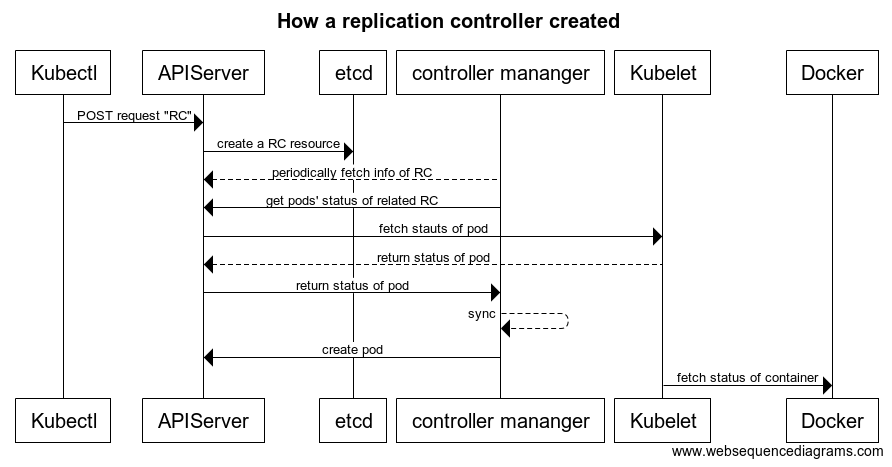
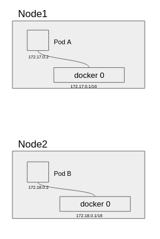
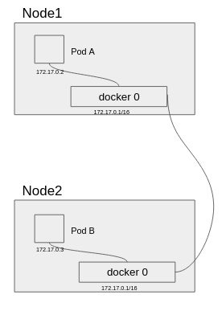
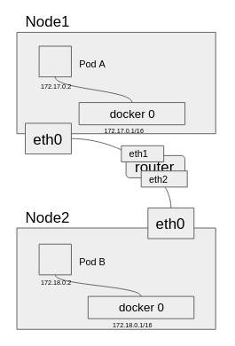
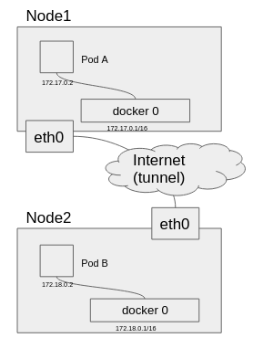
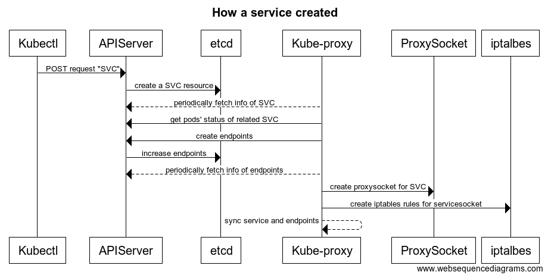

Shiyang WangKubernetes 架构 Overview 2017-09-01

Master/Node 架构
Master相当于中心控制集群其中Master中的APIServer和etcd交流，Node相当于工作集群用来和docker daemon/runc 打交道实际操作管理容器，这里需要注意的是etcd是一个分布式的KV存储系统,支持WATCH接口,通过http long poll实现，使用Raft算法保证数据一致性。
Kubernetes实际模块功能
黄色的部分是运行在Master上的进程，绿色的部分是运行在Node上的进程,紫色的部分是以插件或者pod的形式运行。对于OpenShift,基本的架构都是复用Kubernetes，一部分不同的地方在于kubernets 有许多自己加入的Admission Controllers 注意这个和第三部分的Controller不是一个概念.当然OpenShift也有一些自己的controller 比如说Build Config, Build, Deployment Config 等等这些kubernetes所没有的功能。
Contronller 简介
在Kubernets/OpenShift中Controller 是一个非常重要的概念，它的定义其实很简单，就是一个 loop, 通过和APIServer通讯获取它想要的数据，然后比对用户目前想要达成的状态，如果者两者状态不一致，就做一些同步的操作，然后将结构在写回APIServer,其实主要是etcd里，因为在Kubernetes/OpenShift中，所有的资源都是以Json的形式持久华在etcd中，而etcd只和APIServer打交道。

这里有一个简单的controller 的example
Pod或Replication Controller创建的时序图
这里我画了两个时序图，关于一个Pod是如何创建的，一个RC是如果创建的，这里contoller mananger 是所有generic controller 的一个集合的进程(目前所有的kubernetes controller), 而Scheduler虽然不是一个generic 的controller,但是他的行为模式和controller 是没有区别的 Scheduler相关的代码路径。


Kubernetes 网络解决方案
首先，kubernetes Docker 在网络方面都没有提供完整的解决方案，对于在不同网段的两个Pod,他们之间是无法直接通讯的，所以这里有几种解决方案

1.Node桥接模式
docker0相当于一台交换机，而用一根网线把两个交换机桥接起来，这样所有在这个交换机上的设备就可以通信，但是缺点就是ARP风暴和安全问题

2.Node路由模式
这种模式需要更改所有Node和链路上所有路由的路由规则，而且每次增删Node都需要增删规则，如果有一套动态路由协议，并且集群都在一个大内网环境，这个网络方案还可行，如果在两个Node在公网上，这个方案无法实现。

3.隧道模式
对于公网上的Node如果网段不同只能通过隧道的方式解决，Kubernets本身不提供任何方案，OpenShift 通过Open vSwitch 来解决，我这里介绍了CoreOS的解决方案flannel,其实隧道原理都大同小异。

Kubernets Service 的原理介绍
首先，Kubernets/OpenShift 的Service是一个负载均衡的概念（或者反向代理)主要实现是使用iptables, iptables是通过写一些规则来转发数据包，而kube-proxy就是用来在Node上操作这些iptables.
这里需要注意的是: Service的ip是一个不存在的虚拟ip(仅仅适用与cluster内部),是ping不同的，因为它只存在于etcd里供APIServer和Kube-proxy查询修改iptables来做到数据包转发的作用。
如果需要对外访问，需要配置Service对应的LoadBalancer(这个由Issa基础设施提供，比如AWS,GCE都有相应的LoadBalancer)而OpenShift自己提供了一个router的资源来expose service，另外kubernets社区上有目前也有一个叫ingress的controller/资源来解决Service对外访问的问题。

其他未涉及的部分
1.Auth
2.Storage
3.CLI
4.Kube-Dns
5.各种Controller的具体功能
6.Scheduler 具体调度算法
7.Federation Cluster, Federation Service
8.Aggreator APIServer
9.HA Proxy
10.APIServer 多线程下的Optimistic Concurrency Control
11.Admission Controllers
12.etcd 的机制
13.等等